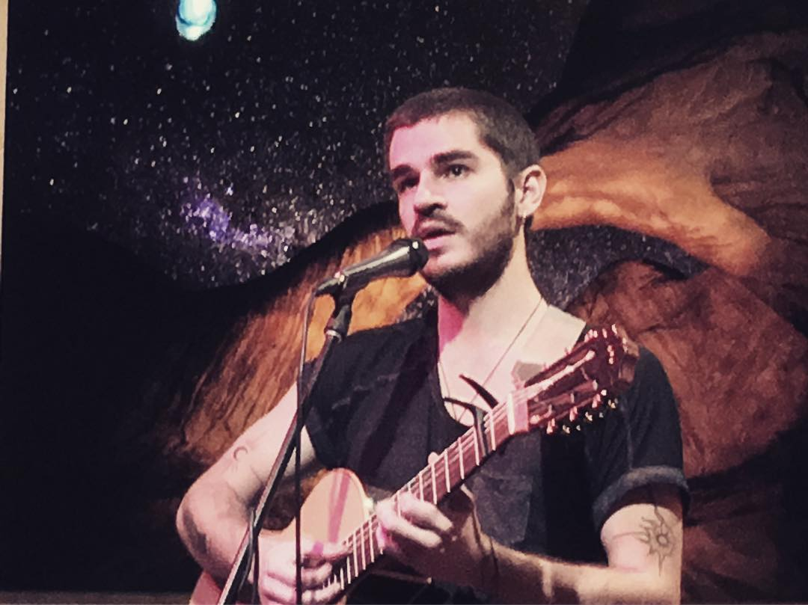
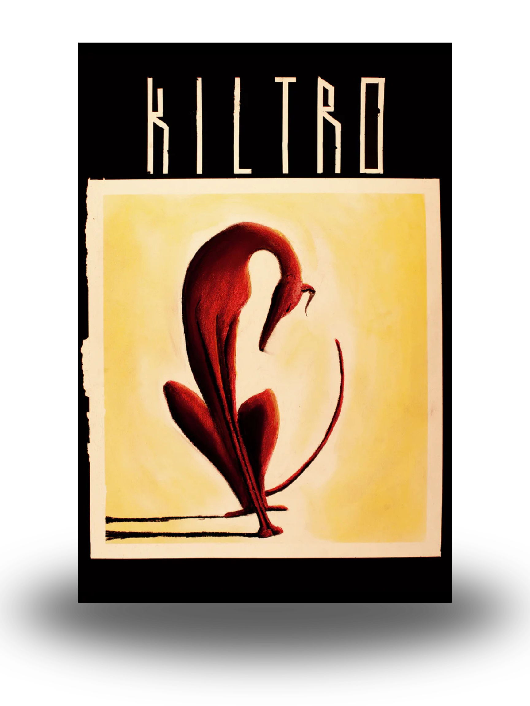
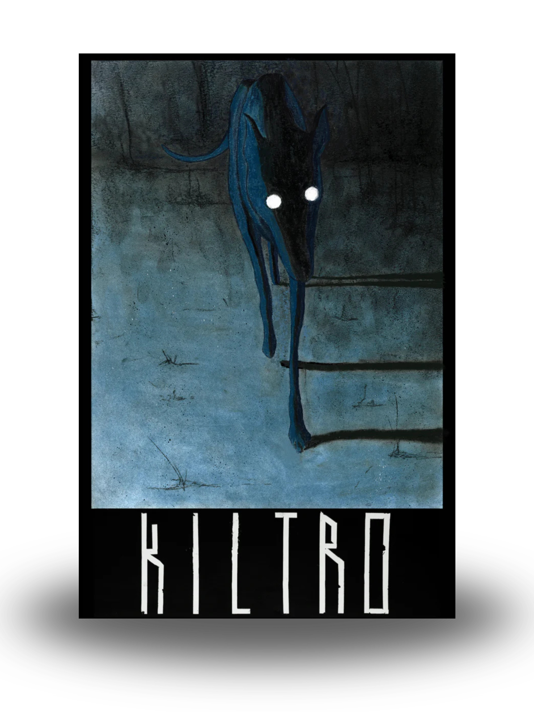
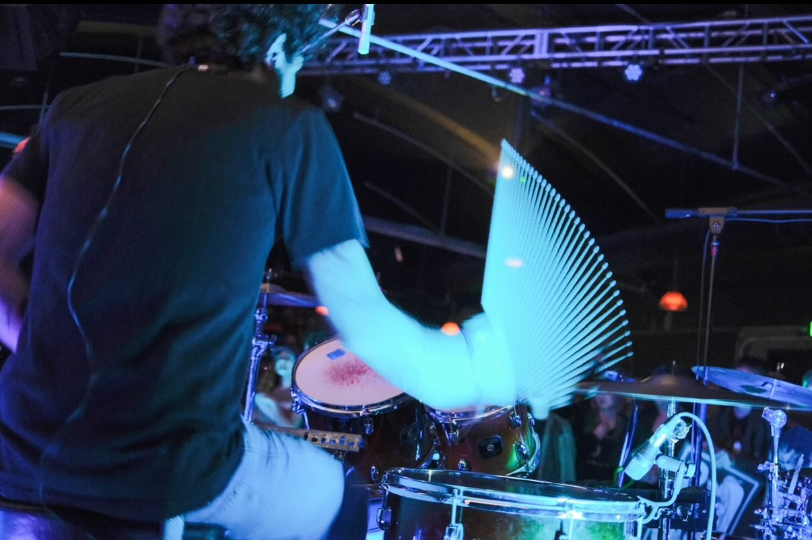
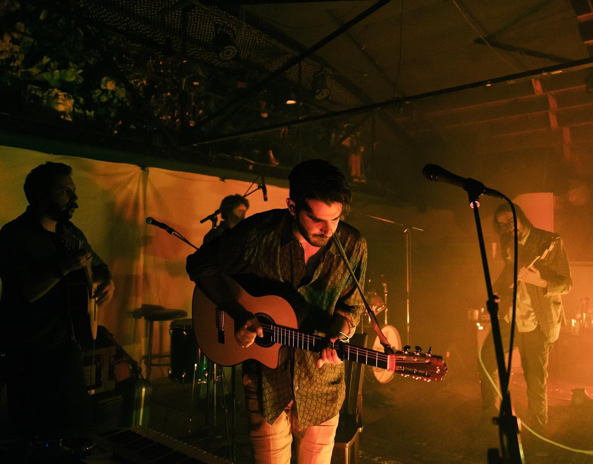
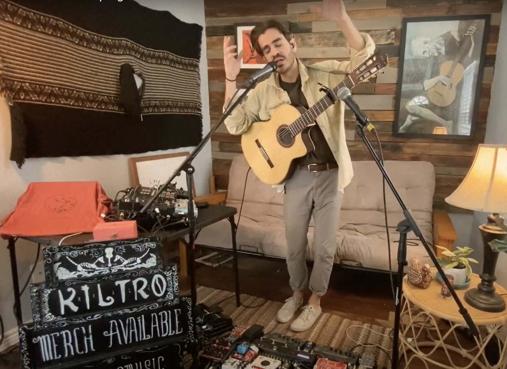
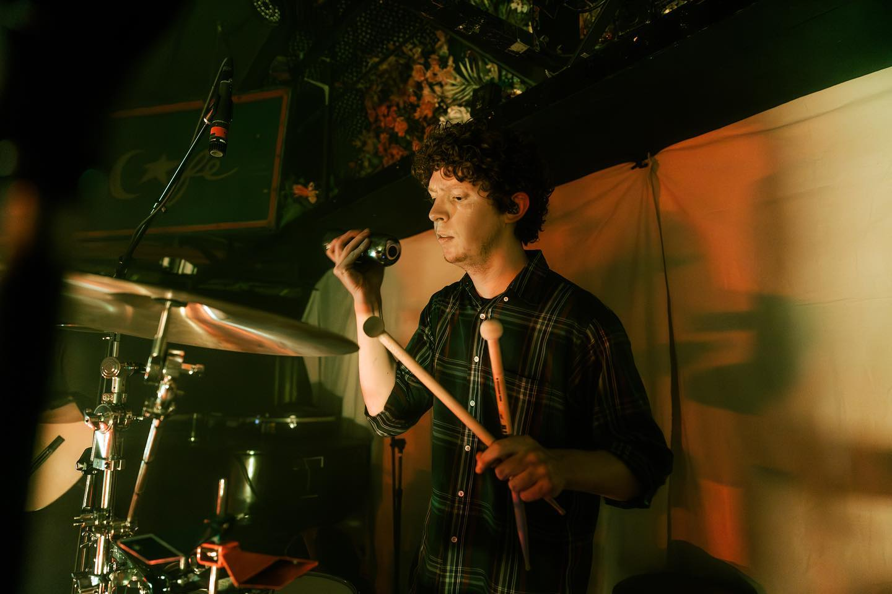
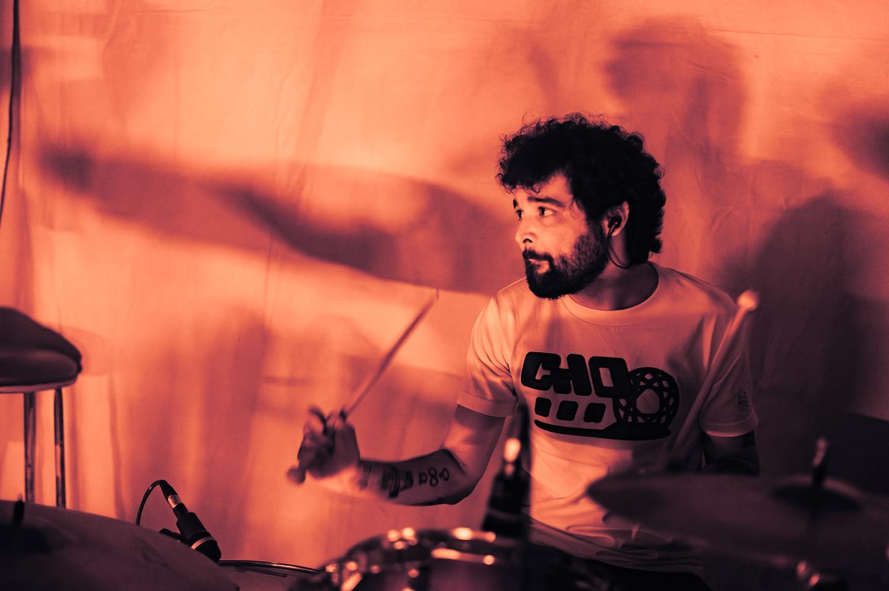

Years ago, Chilean-American singer/songwriter Chris Bowers
Castillo moved to the port city of Valparaíso and became a walking
tour guide.
“I would dress up as Wally and give tours to families and kids,”
he remembers with a laugh. “It was great, because I got to know
the city incredibly well. I'd walk for hours, then spend the rest
of the day partying and drinking, probably way too much. But I
also wrote lots of new songs.”


Back in Denver, Chris looked for a moniker that reflected the evocative and subtly rebellious musical concepts percolating in his head, and settled on kiltro - a word used in Chile for stray dogs or mutts.

“I wanted to do a project mixing different styles and aesthetics,”
he says. “Valparaíso is my favorite city in the world and will
always influence my music. There were street dogs everywhere, and
I'm a mutt myself.”
Titled Underbelly, Kiltro's sophomore album crystallizes those
dreams and experiences into a post-rock manifesto of dazzling
beauty. Its songs combine touches of shoegaze, ambient and
neo-psychedelia with the soulful transcendence of South American
folk - the purity of stringed instruments, supple syncopated
percussion and elusive melodies that define the works of Latin
American legends such as Violeta Parra, Víctor Jara and Atahualpa
Yupanqui.
From the propulsive, chant-like groove of “Guanaco” to the art-pop panache of “All the Time in the World,” Underbelly is the kind of record that invites you to quiet down and listen, savoring every single detail. The album reaches an emotional pinnacle during its second half, when the majestic lament of “Softy” - seeped in exquisite cushions of reverb - segues into the hypnotic reverie of “Kerosene.”
It also signals a new chapter in the fusion of Latin roots with mainstream rock, anchoring its sonic quest on a rare commodity: inspired songwriting.
“So much of this album is defined by the conditions that made it,” says Chris. “Our debut - 2019's Creatures of Habit - has a social, almost communal feel to it, because we played it live time after time before recording. In a way, the songs were troubleshooted in the presence of an audience, then honed in the studio. Underbelly, on the other hand, was made in quarantine. It was just us obsessing in the studio, and we ended up following whatever thread seemed most interesting at the time, which made for an album that is more experimental and creative.”

“We're trying to make sense of the process as we experience it,” adds Will, who returned to Denver and became part of Kiltro after a few years living abroad. “The way we make music, we're definitely not interested in dropping singles. Something that Chris and I have in common is our interest in capturing ambient textures that evoke a sense of place. When we first played music together - years before Kiltro - we got microphones and tried to record the sound of water running down a bathtub. It didn't work out then, but we revisited the same concept on this album.”




For now, the release of Underbelly marks a bold step forward in Kiltro's extraordinary musical journey.
“When we first started the band, I was playing folk songs - focusing on my interior spaces and finding catharsis through melody,” says Chris. “I've always been attracted to music that is melancholy and personal. Then we added the rhythmic component, and I realized that having a bit of noise and chaos can add emotional depth. Underbelly reflects everything that happens inside your soul when the world stops on its tracks.”